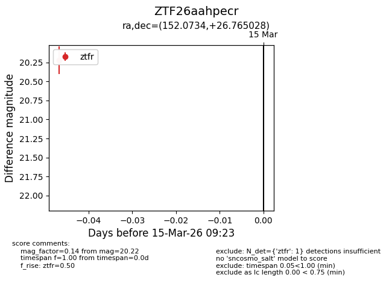
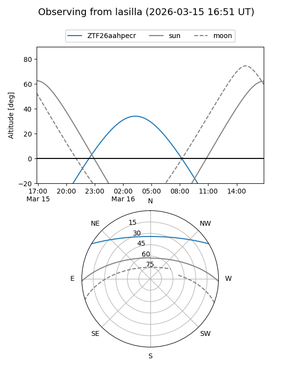
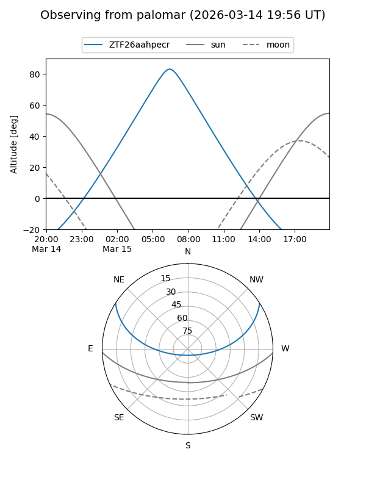
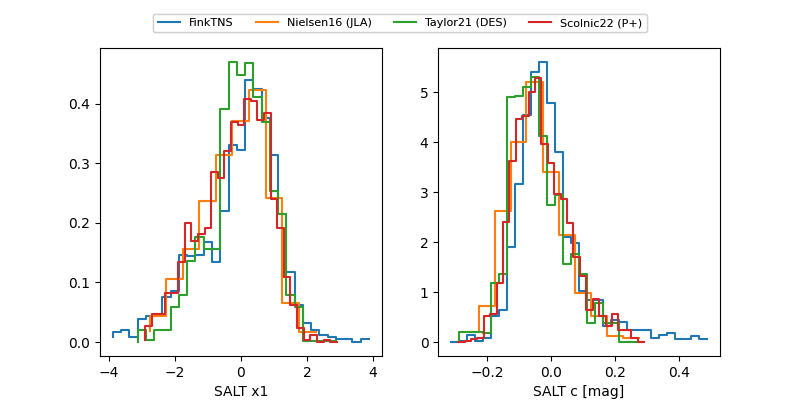

ZTF26aahpecr
Target ZTF26aahpecr at 2026-03-15 09:26
Aliases and brokers:
FINK: link
Lasair: link
ALeRCE: link
alt names
ZTF26aahpecr (ztf,fink_ztf)
Coordinates:
equatorial (ra, dec) = 152.0734,+26.76503
equatorial (HMS+DMS) = 10:08:17.63,+26:45:54.10
galactic (l, b) = (203.9173,+53.80444)
Flags:
Photometry:
last ztfr=20.22
1 ztfr detections
Lightcurve

Visibility


Additional plots
